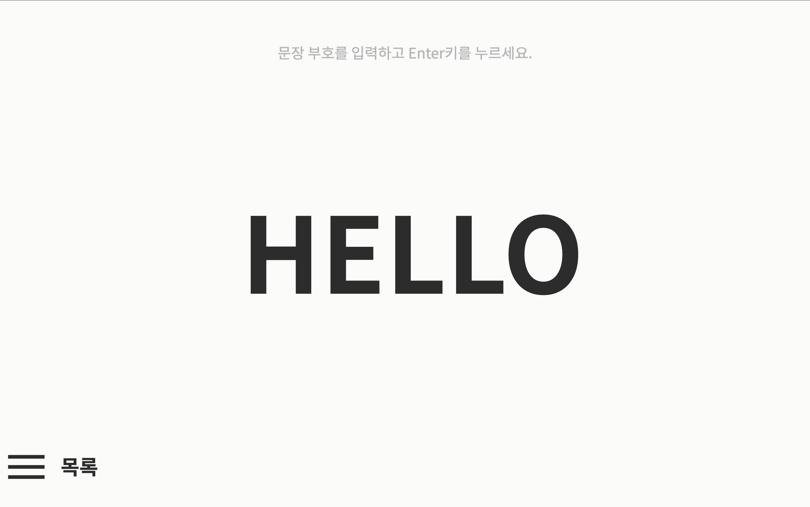
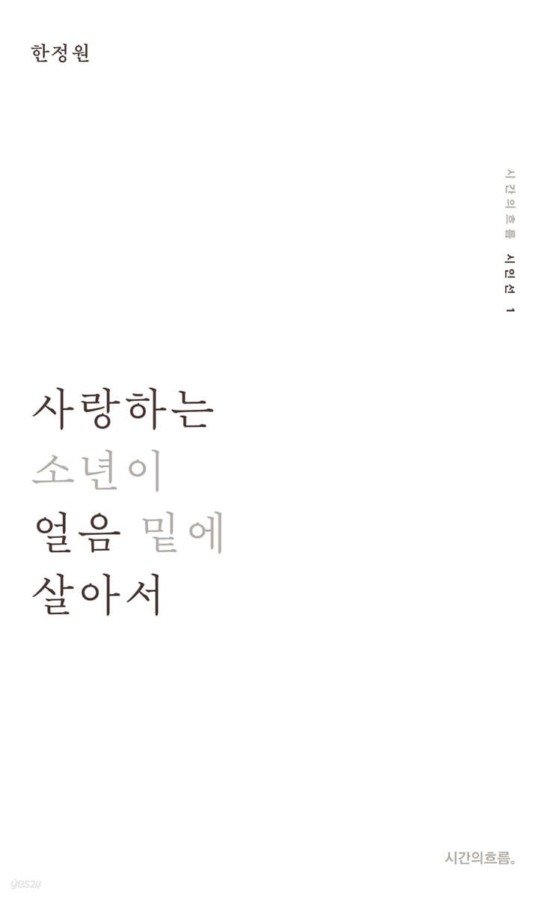

저를
소개합니다
간단한 자기소개
제 이름은 '장예원'입니다. 한자로는 張睿元 이라고 씁니다. 26학번 신입생이에요. 아직 할 줄 아는 게 별로 없지만 열정으로 이겨내고 있습니다.. 이건 제가 봄 전시 때 만든 웹사이트예요. (이미지를 클릭하면 웹사이트로 이동해요.)

좋아하는 것
차 마시는 걸 좋아해요~ 매일 집에서 찻잎을 우려먹어요. 찻집에 가는 것도 좋아해요. 그리고 jpop도 많이 들어요.

가장 좋아하는 시집
저는 문학 장르 중에서는 시를 제일 좋아해서 제가 가장 좋아하는 시집을 소개해보겠습니다. 한정원 시인의 <사랑하는 소년이 얼음 밑에 살아서> 라는 시집인데요, 스물여덟 개의 시로 쓴 극(劇)입니다. 시집보다는 시극이라고 소개하는 게 더 적절했겠네요. 내부가 가로 상철 제본이라는 게 특징입니다. 순수하고 아련한 분위기를 느끼고 싶으신 분들께 추천합니다.

잘 부탁드려요.
자기소개는 여기서 마치도록 하겠습니다. 한글꼴연구회 분들과 함께 작업할 수 있게 되어 너무 기대되네요. 좋은 작업을 할 수 있도록 노력하겠습니다.